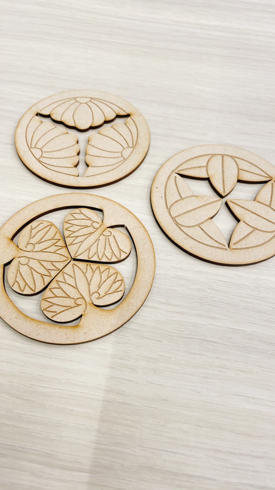
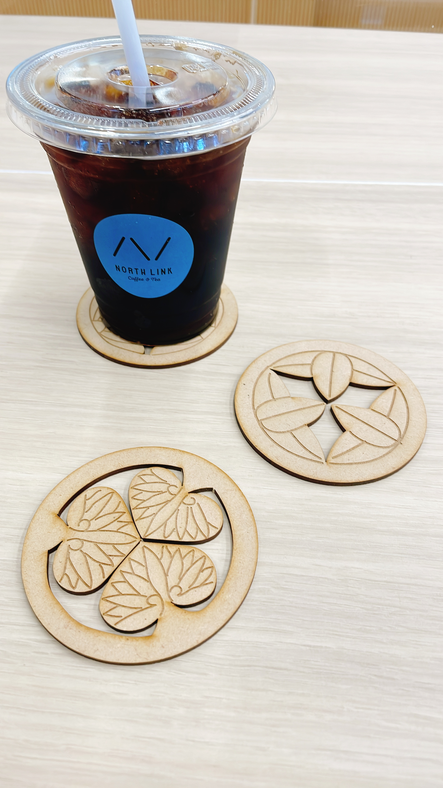
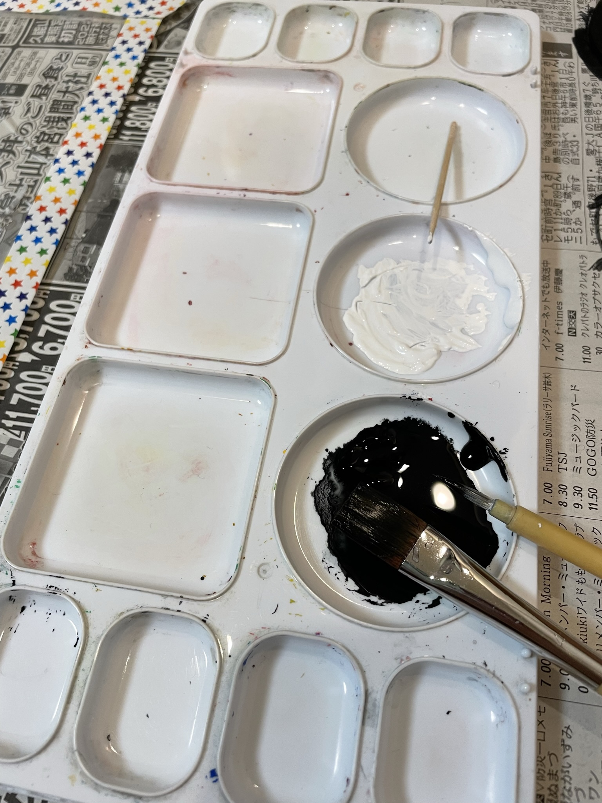
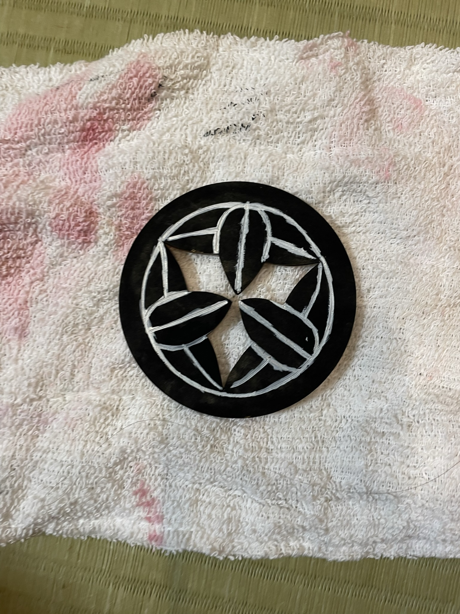
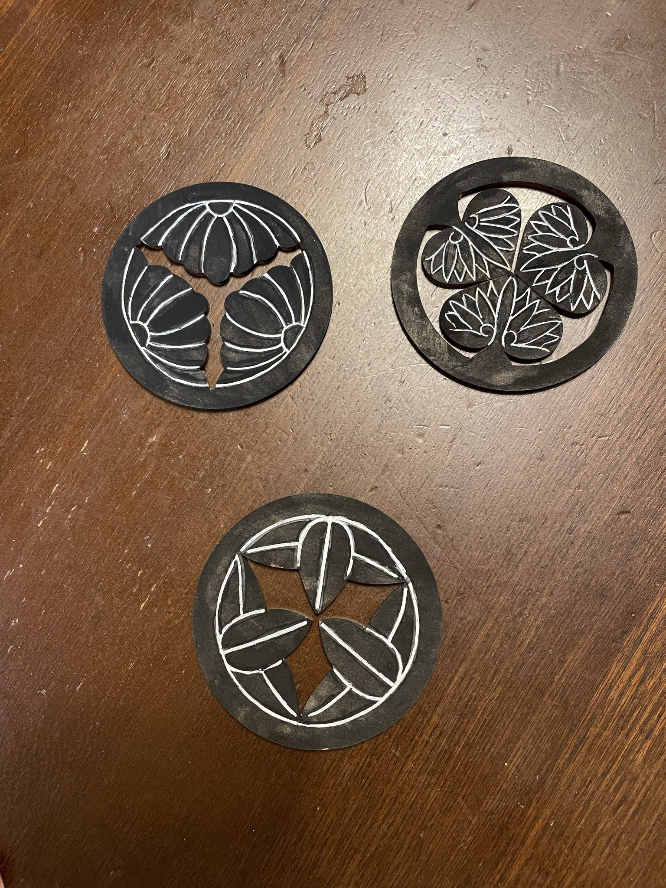

説明
家紋が彫刻されたコースターです。
誰かを招いた際にその人の家紋コースターでもてなしてみたいなどと考えている。
将来的には全家紋揃えられたら面白そう。
目指せ家紋マスター。
塗装前に使ってみた様子


黒と白で着色
下地：平筆・大筆。水あり、べた塗りくらいがむらが出ない。とにかく全面塗れればOK

白ライン：小筆・面相筆。水はほんの少し、または無し。でもたぶんないと掠れて碌に塗れない。彫刻部分が塗れればOK

先に手はみ出た部分の黒塗り：面相筆、ほぼ水無し。とにかく慎重に。
修正白ライン；つまようじ。水なし。

・家紋のデザインについてだが、外側の淵と内側の文様が分離しているものが多く、工夫が必要。
・また、内側の文様も切り離してよいものと切り離すとばらばらになってしまうものがあるので注意が必要。彫刻と切断の使い分けが肝心。